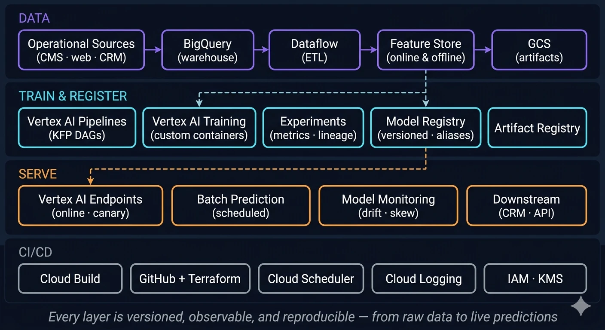
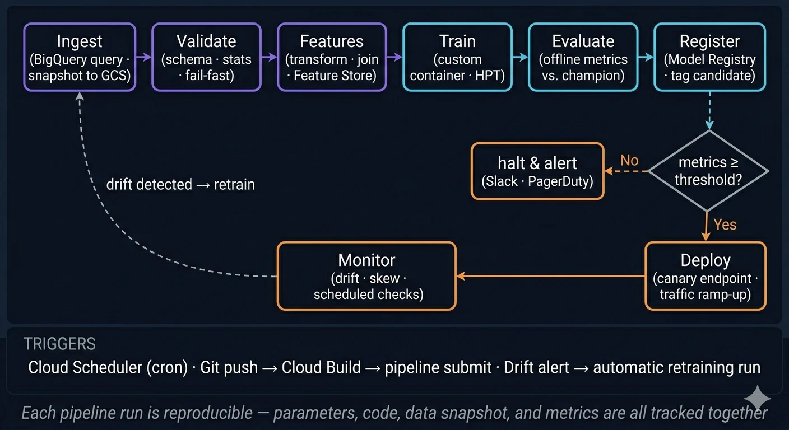

This was my first project as technical manager at NTT DATA, working with one of the largest media groups in Spain. The client already had a respectable portfolio of machine-learning models in production: a churn predictor for their subscription business, an article recommender for the news portal, and a handful of smaller models around content tagging and engagement. Each of them, though, had been built in isolation, by different teams, at different times, with different tools. Training a model meant a data scientist running a notebook on their laptop and copying the resulting pickle file to a server somewhere. It was difficult to reliably reproduce a model from six months earlier, or to know when a model's performance had drifted in production. There was no shared way to version a dataset, promote a model, or roll one back.
The brief was to fix all of that without throwing the existing work away. Move every model onto a single MLOps platform, refactor the code so it could run as scheduled pipelines, and put the usual instrumentation around it: monitoring, CI/CD, drift detection, lineage. The project was paid in part by Google, so it was natural to choose, as platform for MLOps, Google Cloud, with Vertex AI as the backbone.
I led a cross-functional team of ML engineers, data scientists and data architects spanning both NTT DATA and the client. My job was the usual mix that comes with that role: scoping the architecture, breaking the work into different tasks, negotiating priorities with the client, unblocking people, and keeping the technical decisions consistent across all of the workstreams.
What "no MLOps" actually meant
It is worth being concrete about the starting point, because the gap between having models in production and operating models in production is where most of the value of an MLOps platform lives.
- Data versioning: datasets were pulled directly from production tables in BigQuery and the warehouse with ad-hoc SQL. There was no snapshot of what data this model was trained on, so retraining was never a clean re-run.
- Code versioning: training code lived in personal Git repositories and notebooks. Some of it had not run end-to-end in months.
- Model versioning: models were stored as files on shared drives. Two files with the same name in different folders might or might not be the same model.
- Reproducibility: none. Re-training a model required knowledge from whoever had built it.
- Monitoring: basic uptime checks on the prediction services. No notion of feature drift, label drift, or prediction-quality monitoring. Models could quietly degrade for months before anyone noticed.
- CI/CD: manual. Promoting a new model meant copying a file and restarting a service.
- Retraining: semi-automatic. Models were retrained periodically, with the time interval depending on the model.
This is not meant as a criticism of the client; it is just the way things were at that time in the organisation, which was growing its ML portfolio one project at a time. The point of the engagement was to put a platform underneath all of that, so the next model would be easier to ship and the existing ones would be easier to operate.
Target Architecture
We designed the platform around the standard MLOps lifecycle: data, training, registry, serving, monitoring. We used Vertex AI as the glue between all of them, with the rest of GCP filling in the supporting infrastructure.

Data layer. All training and serving data flows through BigQuery, with Dataflow handling the batch and streaming ETL feeding it. Curated feature tables are published to the Vertex AI Feature Store so the same definitions can serve both training and online inference, closing the most common source of training/serving skew. Raw artefacts and dataset snapshots are stored in GCS with object versioning enabled, so any pipeline run can be replayed against the exact data it originally consumed.
Training and registry. Models are trained inside Vertex AI Pipelines using the Kubeflow Pipelines (KFP) SDK. Each pipeline is a DAG of containerised steps, ingest, validate, build features, train, evaluate, register, and steps are reusable across models so a new project starts from a working skeleton rather than a blank notebook. Vertex AI Experiments captures every run's parameters, metrics and lineage; the trained binaries land in the Vertex AI Model Registry, where they are versioned, tagged with their evaluation metrics, and promoted through staging aliases (candidate → staging → production) under explicit approval gates.
Serving. The recommender and a handful of low-latency models are served as Vertex AI Endpoints with canary deployments and traffic splitting; the churn predictor and other batch-oriented models run as scheduled Vertex AI Batch Prediction jobs that write their outputs back to BigQuery for the downstream CRM and marketing systems.
Monitoring. Every production endpoint is wired into Vertex AI Model Monitoring, which compares the live feature distribution against the training baseline and raises alerts when feature drift, prediction drift or training/serving skew cross a threshold. Alerts flow into the same Cloud Logging / Cloud Monitoring stack the rest of the platform uses, so the on-call rotation sees model issues alongside infrastructure issues.
Cross-cutting concerns. Cloud Build runs CI/CD on every commit, unit tests, integration tests, container builds, pipeline submissions in dev, and Terraform describes all the GCP resources so environments (dev, staging, prod) are not snowflakes. Cloud Scheduler triggers the periodic retraining and batch-scoring runs. IAM and KMS handle access control and secrets uniformly across the platform.
What a Pipeline Actually Does
Each model, churn, recommender, the rest, ended up as a Vertex AI Pipeline with broadly the same shape. The specifics differ (the recommender has a much larger training step and runs less often; the churn predictor scores in batch overnight) but the structure is shared.

The pipeline runs on a schedule (typically weekly for churn, daily for the recommender) or whenever Model Monitoring raises a drift alert against the corresponding production endpoint. A typical run goes through:
- Ingest: a parameterised BigQuery query produces a dated training snapshot and writes it to GCS. The snapshot URI is recorded as a pipeline parameter so the run is fully reproducible.
- Validate: schema, types and basic statistics are checked against the previous snapshot. Anything that looks wrong (a feature distribution that has shifted suspiciously, a column that has gone missing) fails the pipeline early before any compute is wasted on training.
- Features: transformations and joins produce the model-ready feature set, which is materialised in the Feature Store so the same definitions are available at inference time.
- Train: the model is trained inside a custom container, optionally with hyperparameter tuning when the training budget allows it.
- Evaluate: offline metrics are computed and compared against the current production model. Both the new candidate's metrics and the comparison are logged to Experiments.
- Register: if the candidate is at least as good as production on the agreed metrics, it is registered in the Model Registry and tagged as a candidate. If not, the run halts and an alert is raised; no silent regressions.
- Deploy: a candidate that passes the offline gate is rolled out to a canary endpoint with a small slice of live traffic, monitored for a defined window, and either promoted to take 100% of traffic or rolled back automatically.
The full cycle runs without human intervention on the happy path; the human work is concentrated where it actually adds value: reviewing the model card before promotion, investigating drift alerts, deciding whether a borderline candidate is worth shipping.
Refactoring the Existing Models
The architecture diagram was the "easy" part. The substantive work was rebuilding the existing models: code that had grown organically and was not written for containerised, parameterised pipeline execution, into something the platform could run.
For each model we worked through the same pattern:
- Pull the training logic out of notebooks into a proper Python package, with tests, a defined entry point, and explicit dependencies.
- Split the monolithic training script into the pipeline steps above, so the expensive parts (training, evaluation) could be cached and re-run independently.
- Replace direct database reads with parameterised BigQuery queries that produced dated snapshots.
- Migrate feature engineering into reusable components and, where the same feature was used by multiple models, push it into the Feature Store.
- Wrap everything in a container, register it in Artifact Registry, and submit it as a Vertex AI pipeline.
Outcomes
By the end of the engagement, all the models in scope were running on Vertex AI on a regular schedule, with monitoring on every production endpoint and CI/CD wired up to the team's Git repositories. Concretely:
- Retraining went from a manual, days-long process per model to a scheduled pipeline run measured in hours.
- Promoting a new model version went from copying files to opening a pull request and approving the candidate in the Model Registry.
- Drift detection that previously did not exist now caught two distinct feature-distribution shifts on the recommender during the first months of operation; one of them traced back to an upstream change in how article tags were generated, which would otherwise have quietly degraded recommendations.
- Onboarding a new model became a question of cloning a pipeline template and filling in the model-specific bits, rather than designing the operational story from scratch.
Note: the hero image and the architecture and pipeline diagrams on this page were generated with AI.